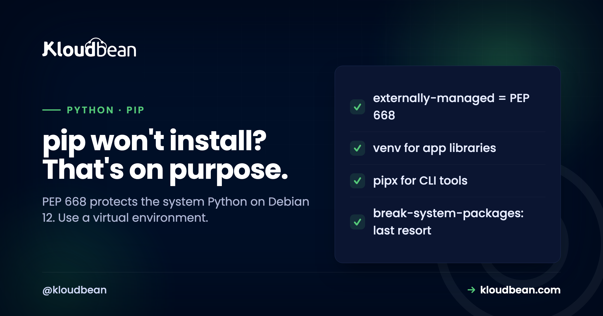

Fixing pip's externally-managed-environment Error on Debian and Ubuntu

You SSH into a fresh server, run pip install something, and instead of installing you get a wall of text starting with error: externally-managed-environment. Nothing is broken. This is new, deliberate behaviour on Debian 12 and recent Ubuntu, and once you understand why it exists, the fix takes about thirty seconds and leaves your setup cleaner than the old way ever was. The short version: stop installing packages into the system Python, and give each project its own environment instead.
Don't force pip to install into the system Python. Create a virtual environment instead: run python3 -m venv .venv, activate it with source .venv/bin/activate, then pip install works normally inside it. For command-line tools you want available everywhere, use pipx rather than global pip. The --break-system-packages flag exists and works, but it can break OS tools that depend on the system Python, so keep it for throwaway containers only, never a real server.
What the error actually means
This is not a bug, and reading the message literally is the fastest way past it.
Starting with Debian 12 (Bookworm) and Ubuntu 23.04, the Python that ships with the operating system is marked as "externally managed," which is a rule defined in PEP 668. It means the OS package manager (apt) owns that Python installation, and pip is being told not to install packages into it. The reason is real: the system itself uses that Python for its own tools, and when people pip install random packages into it, they occasionally upgrade a shared dependency and quietly break a system utility. So the maintainers drew a hard line. The system Python is for the system. Your application's packages belong somewhere else. The error is pip refusing to blur that boundary, and honestly, it is preventing a class of "why did apt stop working?" incidents that used to be miserable to debug.
Here is the whole decision in one table, then the detail on each row:
| Your situation | Use | The command |
|---|---|---|
| Your app's own libraries | A virtual environment | python3 -m venv .venv |
| A command-line tool you want everywhere | pipx | pipx install <tool> |
| A genuine system-wide package | apt | apt install python3-<pkg> |
| A throwaway container only | The override flag | pip install X --break-system-packages |
The right fix: a virtual environment per project
A virtual environment is the answer PEP 668 is nudging you toward, and it is the answer you want anyway.
A virtual environment is an isolated Python that lives inside your project folder, with its own packages, completely separate from the system Python. Create and use one like this:
python3 -m venv .venv
source .venv/bin/activate
pip install -r requirements.txtOnce activated, pip install behaves exactly as you remember, because inside the environment there is no external manager to conflict with. Your packages install into .venv, not the system, so nothing you do can break the OS Python. When you deploy, you do the same thing on the server: create the environment, install from requirements.txt, and point your process manager or service at the Python inside .venv. If you have ever had two projects need different versions of the same library, this also solves that, because each project carries its own. One environment per app is the habit worth building. It was always good practice; Debian 12 just made it the default path instead of an optional one.
That last step, pointing the running process at the right interpreter, is where most people lose an hour. On Kloudbean the Python runtime config lives in the console, so you set the interpreter path and the start command from the dashboard instead of hand-editing a systemd unit over SSH. Same idea either way: the process has to be told which Python to use, because it won't guess.
For command-line tools, use pipx
There is one case where a virtual environment feels like overkill, and it has its own clean answer.
When the thing you want is a command-line tool (a linter, a formatter, httpie, a static-site generator) you genuinely want it available system-wide, not trapped in one project's environment. That is what pipx is for. It installs each tool into its own hidden virtual environment and then exposes just the command on your path, so you get global availability without polluting the system Python:
sudo apt install pipx
pipx ensurepath
pipx install <tool>This keeps the PEP 668 boundary intact (each tool is isolated) while giving you the convenience you actually wanted. Reach for pipx for tools, and venv for your application's libraries. Between those two, the vast majority of the externally-managed-environment situations are solved the correct way.
The override, and why it is a last resort
There is a flag that makes the error go away instantly, and I want to be clear about when it is acceptable.
Adding --break-system-packages to a pip command does exactly what the name warns:
pip install <package> --break-system-packagesIt tells pip to ignore the boundary and install into the system Python anyway. It works. It is also named that way on purpose, because it can upgrade a package the operating system relies on and leave a system tool broken, sometimes apt itself. The only place I would use it is a disposable container or CI image that gets thrown away, where there is no long-lived system to protect and speed matters more than hygiene. On a real server, a machine you will still be running in six months, reach for a virtual environment instead. The two minutes you save with the flag are not worth the afternoon you might lose to a half-broken system Python later.
There's a second reason to avoid it on managed hosting specifically. If the platform owns OS patching, as Kloudbean does on its Debian 12 stack, then packages you force into the system Python are sitting directly in the path of the next update. You've created a conflict between your install and the platform's, and the update usually wins. Your own .venv is invisible to that process, which is precisely why it's the safe place to be.
What does not work, so you can skip it
A couple of things people try in a panic are dead ends, worth naming so you do not waste time.
The --user flag does not bypass this; PEP 668 blocks user installs into an externally-managed Python too. Deleting the EXTERNALLY-MANAGED marker file to silence the error is possible, and it is a bad idea: you are removing the guard rail rather than stepping around it, and you inherit exactly the system-breakage risk it was added to prevent. And sudo pip install makes it worse, not better, because now you are installing into the system Python as root, which is the precise scenario the rule exists to stop. If a fix feels like fighting the OS, it is the wrong fix. The right ones (a venv, or pipx) work with the boundary, not against it.
When it works locally and the deployed app still can't find its packages
Locally this error costs you thirty seconds. On a server it turns into a process that starts, throws ModuleNotFoundError, and restarts forever, and the venv is nearly always the reason. Check these four things in this order, because each one makes the next one pointless if it's wrong.
- Which Python is actually running the process? Not
which python3in your SSH session. The one named in the service file, the process-manager config, or the start command. If it says/usr/bin/python3, it will never see.venv, and reinstalling packages a fourth time won't change that. Point it at/path/to/app/.venv/bin/python. - Was the venv built on this machine? A
.venvcopied from your laptop or committed to Git carries absolute paths from the machine that made it, and sometimes the wrong architecture entirely. Rebuild it on the server. Then put.venv/in.gitignoreso it can't happen again. - Did the install run inside it?
activatefailing silently is common in deploy scripts, and everything after it targets the system Python. Skip the ambiguity: call the venv's pip directly with.venv/bin/pip install -r requirements.txt. No activation step, nothing to get wrong. - Is
requirements.txtcomplete? The package that works locally because you installed it manually six weeks ago and never wrote it down is the classic. Build a fresh venv from the file alone and start the app. If it runs, the file is honest.
No host fixes any of those four, ours included. They're all your side of the line, because they're all decisions about your code. What a managed platform removes is the layer underneath: Kloudbean patches the OS and the system Python for you, so the "I broke apt with pip" incident stops being possible, and Git deploys with live build logs mean you can watch the install step succeed or fail rather than guessing at it afterwards. The interpreter path and start command live in the console, so item one is a field you fill in, not a systemd file you edit blind. Everything about which packages your app needs stays yours. For the full deployment path, see deploying a Flask app or a Django app.
Related reading
If a different Python import is failing, ModuleNotFoundError in Python walks the five causes. For shipping Python to production, deploy a Flask app, a Django app, and a FastAPI app. Configuration that should travel with your app, not your system, is covered in environment variables done right.
Run Python on a server you don't have to babysit.
Kloudbean keeps the OS and system Python patched and consistent, so you deploy your app in its own environment and leave the base system to us. Managed servers, managed databases, Git deploys, free SSL. Start at kloudbean.com, or see the tradeoffs in managed vs unmanaged hosting.
Managed, patched OS · Python runtime config · Git deploys · Managed databases
FAQ
What does externally-managed-environment mean in pip?
It means the Python installation you are trying to install into is managed by the operating system's package manager, not by pip, and pip has been told not to touch it. This is defined in PEP 668 and became the default on Debian 12 and Ubuntu 23.04 and later. The system uses that Python for its own tools, so installing packages into it risks breaking them, which is exactly what the rule prevents.
How do I fix externally-managed-environment quickly?
Create a virtual environment and install into that. Run python3 -m venv .venv, then source .venv/bin/activate, then pip install as normal. Everything installs into the project's isolated environment instead of the system Python, so the error disappears and nothing system-wide is at risk. This is the intended fix and takes under a minute.
Is it safe to use --break-system-packages?
It works but carries real risk. The flag tells pip to install into the system Python anyway, which can upgrade a package the OS depends on and break a system tool, sometimes including apt. It is acceptable only in a disposable container or CI image that gets discarded. On a long-lived server, use a virtual environment instead, because the small time saving is not worth a potentially broken system Python.
Why did this start happening on Debian 12 and Ubuntu?
Debian 12 (Bookworm) and Ubuntu 23.04 adopted PEP 668, which lets a Python distribution mark itself as externally managed. Earlier versions did not enforce this, so pip install into the system Python just worked, and occasionally broke things. The newer versions draw a firm boundary between the OS's Python and your application's packages to stop those hard-to-debug breakages.
Does --user fix the error?
No. PEP 668 blocks user-level installs into an externally-managed Python as well, so pip install --user hits the same error. The fix is not a different pip flag but a different location entirely: a virtual environment for application libraries, or pipx for command-line tools. Both install outside the protected system Python, which is what the rule requires.
Should I delete the EXTERNALLY-MANAGED file?
No. Removing that marker file does silence the error, but it removes the safeguard rather than working around it, so you take on the exact system-breakage risk the rule was added to prevent. It is the kind of fix that seems fine until an OS update or a shared dependency upgrade breaks a system tool. Use a virtual environment, which solves the problem without disabling the protection.
What is the difference between venv and pipx here?
Use venv for your application's libraries: it creates an isolated environment inside your project so its packages never touch the system. Use pipx for command-line tools you want available everywhere: it installs each tool in its own hidden environment and exposes just the command globally. Both respect the PEP 668 boundary. The rule of thumb is venv for app dependencies, pipx for standalone tools.
Do I need to worry about this on managed hosting?
You still use a virtual environment for your app, which is good practice regardless, but you do not manage the system Python or the OS updates yourself. On a managed platform like Kloudbean the base system stays patched and consistent for you, so you avoid the whole category of accidentally breaking the OS Python with pip. Your responsibility narrows to your own project's environment and its requirements file.